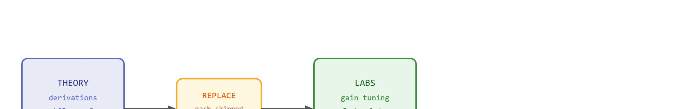

"I replaced one derivation with three plots and the concept finally stopped hiding."
An Undergraduate Lab Sequence
This section adapts the graduate curriculum described in section 60.1 for students who have completed introductory programming and linear algebra but have not yet taken a formal control theory course. Instructors who want to restore the full derivation track can follow the optional readings flagged throughout, particularly around section 7.3 (proportional and PID control) and section 8.6 (Kalman filtering). Lighter theory does not mean no theory: students still derive the basic proportional-control law and the Kalman prediction-update equations by hand in week 2 and week 6 respectively; what gets cut is the surrounding optimality proofs (the LQR derivation, the Lyapunov stability proof), not the operating equations students need to run the labs. The lab-first approach introduced here scales into the two-semester sequence in section 60.3, where the same simulation environment is reused for more advanced projects.
A student adjusts a single gain, watches a simulated robot stop oscillating, and suddenly understands stability more deeply than three lectures of Riccati equations ever managed. That moment is possible right now because high-fidelity simulators run in a browser, and embodied AI has reached the point where undergraduates can close the perception-action loop themselves in an afternoon. This section shows how to cut the formal theory load without cutting the insight: which derivations to defer, which labs replace them, and how to build a 14-week arc that leaves students able to ship a working agent, read a real paper, and explain exactly where their system will fail.

Cut three lectures of Riccati-equation algebra, hand a student a single gain slider, and within an afternoon they can predict exactly when a controller will oscillate, overshoot, or settle: that trade is the entire premise of this track. This track takes the 14-week graduate curriculum from section 60.1 and reshapes it for advanced undergraduates: decide which derivations to defer, choose the lab that replaces each one, and define the deliverable that proves the mechanism was learned. Figure 60.2A contrasts the two tracks, showing which heavy-theory blocks (dynamics, the Linear Quadratic Regulator, Inverse Reinforcement Learning) are compressed or moved to optional reading and how the freed hours are reinvested in hands-on simulation labs. Figure 60.2B diagrams the substitution itself: each reduced derivation flows through a replacement step into a matching lab, with the explain-the-shift test (asking a student to predict, before running the code, what will change when one parameter moves; defined in full below) as the outcome that certifies the swap. That contract becomes a usable mental model in three moves: define the object of study, connect it to the agent loop, then test it with a compact implementation.
The key question in One-semester advanced undergraduate course (lighter theory, more labs) is practical: what must the agent know, what can it observe, what action is available, and what evidence shows that the action worked under the stated conditions?
Advanced undergraduate course design should be judged by the action it improves. A section claim is strong when it names the decision, the measurement, and the failure mode before a larger model or simulator is introduced.
For One-semester advanced undergraduate course (lighter theory, more labs), the practical design rule is typically to make the interface inspectable before optimization begins: inputs, outputs, units, latency, bounds, and failure labels should all be visible in the saved artifact.
The mechanism here is the substitution contract: every deferred derivation must map to a lab whose logged artifact exposes the same causal variable. Concretely, the LQR optimality proof maps to a MuJoCo Playground CartPole gain sweep whose step-response plot is the artifact; the Kalman gain derivation maps to a filter-divergence lab whose innovation-covariance trace (the running variance of the gap between predicted and measured readings, which balloons when the filter is mistuned) is the artifact; the Lyapunov stability proof maps to an Isaac Lab quadruped push-recovery run whose survival-rate-versus-disturbance curve is the artifact. The transformation is valid only when the lab's logged signal (gain, innovation covariance, recovery trajectory) changes visibly when the skipped theorem's key parameter moves; if the log stays flat under that perturbation, the substitution failed and the derivation must be restored.
To see that substitution contract pass or fail, it helps to walk one deferred derivation all the way down to the lab artifact that replaces it.
Keep one concrete rollout in view: a sensor reading becomes an estimate, the estimate drives an action, the action changes the world, and the next observation confirms or refutes the assumption. Any course-design choice here earns its place only by improving that loop.
Consider a specific case. A 14-week undergraduate robotics course using this book drops the full LQR derivation, normally 3 lectures in the graduate version. It replaces that derivation with a MuJoCo Playground lab where students tune a proportional controller for a CartPole task. Students start with a gain of $k_p = 1.0$, observe oscillation at 2 Hz, increase to $k_p = 5.0$, observe overshoot, then settle on $k_p = 3.2$ by reading the phase margin (the extra phase lag, in degrees, a loop can absorb before it becomes unstable, where more margin means more damping) from a Bode plot (a pair of curves showing how a system's gain and phase respond across frequency) generated by their notebook. The formal optimality proof is offered as optional reading; the lab artifact (gain, phase margin, step-response plot) is the graded deliverable. The diagnostic teaches the mechanism of stability, not the Riccati equation. A side-by-side trial across two sections of the same course sharpened the point. Students who derived the Riccati equation first needed an average of 9 lab sessions before they could correctly predict the effect of a gain change. Students who started with the gain-tuning lab needed 2, because they already held the causal link between parameter and behavior before the algebra arrived.
When running the CartPole gain-tuning lab in MuJoCo Playground, set the model timestep (model.opt.timestep) to 0.002 s before sweeping gains: the default 0.01 s timestep causes the integrator to alias fast oscillations, so a gain that looks unstable at the default timestep may actually be stable and vice versa. Students who skip this step routinely report that "the controller never converges," when the real culprit is numerical blow-up rather than a wrong gain. A quick sanity check is to run the same gain with mj_step called twice per control step and confirm that the step-response shape does not change; if it does, the timestep is the problem, not the tuning.
For One-semester advanced undergraduate course (lighter theory, more labs), the small contract exists to expose the teaching artifact before tooling takes over. Use notebooks, simulators, shared logs, rubrics, and capstone studios only when they preserve the same observation, action, metric, and failure fields.
Trace one student's proportional-controller sweep with concrete numbers. Setup: CartPole, pole starts at +0.10 rad, control law $u = k_p \theta$, timestep 0.002 s. Run 1 ($k_p = 1.0$): peak angle climbs to 0.18 rad, the pole oscillates roughly every 0.5 s (about 2 Hz) and never settles, so the logged step-response amplitude stays near 0.15 rad after 4 s (verdict: too soft). Run 2 ($k_p = 5.0$): the pole snaps back fast but overshoots to -0.07 rad on the first swing, then to +0.04 rad, a classic ringing pattern (verdict: too stiff). Run 3 ($k_p = 3.2$): first correction reaches -0.02 rad, second is under 0.01 rad, settled inside 1.5 s; the student reads a phase margin of about 45 degrees off the Bode plot (verdict: good). The graded artifact is the three step-response plots plus the chosen $k_p$ and its phase margin. Notice the lesson lands without ever solving a Riccati equation: the parameter-to-behavior link is read straight off the numbers.
The CartPole walkthrough shows what one substitution looks like in practice; the following steps generalize it into a repeatable procedure you can apply to every derivation you defer.
The most frequent failure in the lighter-theory format is removing derivations without adding a replacement diagnostic. Instructors cut the Kalman filter derivation to save two lectures, but provide no lab where students observe filter divergence when process noise is misspecified. Students then know the filter exists but cannot diagnose or tune it. Every reduced derivation needs a corresponding experiment where the mechanism being skipped becomes visible through numbers, plots, or a structured failure case.
Students often assume that high simulator performance is sufficient proof that their embodied agent works. In embodied AI this is wrong: a simulator optimizes a reward signal inside a closed model of physics, perception, and actuation, none of which exactly match real hardware. The correct mental model is that a simulator result is a hypothesis, not evidence: it shows that the agent can exploit the model's assumptions, not that it can handle the sensor noise, mechanical backlash, communication latency, and distributional shift present on physical hardware. Every simulator-only result should be accompanied by an explicit list of the physical effects the simulator omits and a prediction of how each omission would change performance on real hardware.
A team using One-semester advanced undergraduate course (lighter theory, more labs) starts by writing the task panel, not by picking the largest model. They keep a baseline run, a maintained-tool run, and a perturbation run in the same result folder. The comparison is accepted only when the action trace, metric, and failure labels come from one script.
MIT's 6.4210 course applies exactly the lab-first substitution this section describes: instead of front-loading optimization-theory derivations, students drive a Drake-based simulator and tune perception and grasp pipelines, with weekly graded notebooks as the deliverable. The formal treatment of trajectory optimization is offered as supplementary notes, while the visible artifact (a successful grasp trace logged in the simulator) is what proves the mechanism was learned, mirroring the explain-the-shift contract.
A good embodied system makes one-semester advanced undergraduate course (lighter theory, more labs) visible twice: once in the design sketch and once in the replay artifact. The second view keeps the first one honest.
For One-semester advanced undergraduate course (lighter theory, more labs), the open research question is not whether a larger policy can produce a better demo. The sharper question is whether the method improves reliability across new scenes, new embodiments, delayed feedback, and rare failures under an evaluation protocol that another lab can reproduce.
For One-semester advanced undergraduate course (lighter theory, more labs), can you name the observation, action, protected assumption, success metric, and one likely failure case? If any field is vague, rewrite the contract before adding model complexity.
An advanced undergraduate version should preserve the honesty of embodied AI without assuming mature mathematical fluency from day one. The design goal is to keep the system loop visible while shifting some formal depth into guided experiments, diagrams, and reflection.
The challenge is not simplification for its own sake. It is choosing which abstractions students must derive themselves and which ones they should experience empirically through well-designed labs.
One-semester advanced undergraduate course (lighter theory, more labs) becomes teachable once the student can state the operative variables, the decision boundary, and the evidence artifact. The section should therefore be read together with Part II on control and estimation and Part III on simulation tooling, where the same loop is developed from adjacent angles.
Let mastery be approximated by $M_k = w_c C_k + w_l L_k + w_r R_k$, where $C_k$ is conceptual understanding, $L_k$ is lab completion quality, and $R_k$ is reflective explanation. Undergraduate adaptation should raise $L_k$ and $R_k$ when formal derivation time is reduced.
If you lighten theory without increasing experiments and reflection, students only lose depth. The substitution works only when each removed derivation is replaced by a concrete artifact or visual diagnosis that teaches the same mechanism from another angle.
The lighter-theory approach breaks down in three situations. First, subsequent topics can depend on a skipped derivation: removing the Lyapunov stability proof causes trouble once students reach nonlinear control in week 10 and cannot follow stability arguments. Second, under-specified labs let students complete exercises without understanding what they measured. Third, grading reflection on completion rather than reasoning quality destroys the benefit. All three failures share the same symptom: students run the code and report a number, but cannot explain what changes when the environment shifts. Call this the explain-the-shift test. It distinguishes genuine theory-reduction from superficial coverage.
The explain-the-shift test matters for embodied AI specifically because physical robots operate under distribution shift by default: floor friction changes, lighting changes, payloads vary. A student who cannot predict what happens to their controller when one parameter shifts will deploy a working simulation agent. That agent then fails immediately on hardware, with no principled path to diagnosis. The inability to reason about shift is not an abstract gap; it causes real hardware damage and wasted experiment time. A course that teaches students to run the simulation but not to predict when it lies has not taught embodied AI; it has taught a very expensive screensaver.
That reasoning-about-shift skill can feel abstract, so it helps to anchor it in an everyday act of adaptation before returning to the controller.
Think of it like seasoning a dish you have only cooked in one kitchen. You perfected the salt level at sea level, then the recipe travels to a mountain kitchen where water boils at a lower temperature and the reduction time changes. A cook who understands salt as a variable tied to evaporation rate can immediately predict what will go wrong and adjust; a cook who only memorized the quantity cannot. The explain-the-shift test asks exactly that: not whether you can reproduce the result under identical conditions, but whether you understand which variable you pulled on and what will unravel when it moves.
The test works by presenting students with a small, deliberate perturbation, such as doubling the process noise covariance in a Kalman filter lab, and asking them to predict the effect before running the code, then explain any discrepancy between prediction and result. If the prediction is blank or purely verbal ("it will get worse"), the derivation was not internalized. A passing response names the specific state variable whose variance grows, the control gain that will react, and the observable symptom in the step-response plot.
| Dimension | What To Specify | Why It Matters |
|---|---|---|
| Math load | Shorter derivations, more intuition boxes and diagrams | Maintains momentum without hiding mechanisms. |
| Lab structure | Guided checkpoints, smaller validated exercises, faster feedback loops | Supports students who are still learning the tooling stack. |
| Assessment | Frequent low-stakes artifacts plus one smaller capstone | Reduces last-minute project collapse. |
| Discussion | Reflection on debugging and system behavior | Builds engineering judgment early. |
def validate_plan(payload: dict[str, object]) -> dict[str, object]:
assert payload, "payload must not be empty"
return payload
# Undergraduate-course adaptation card.
plan = {
"formal_derivation_weeks": 4,
"guided_lab_weeks": 10,
"weekly_reflection": True,
"capstone_scope": "narrow simulator-first project",
}
print(validate_plan(plan)){'formal_derivation_weeks': 4, 'guided_lab_weeks': 10, 'weekly_reflection': True, 'capstone_scope': 'narrow simulator-first project'}validate_plan guard asserts the adaptation card is non-empty, then prints the week split (4 formal-derivation weeks versus 10 guided-lab weeks) that encodes the lighter-theory course design.The expected output should show what replaced theory load, not just that theory was reduced. Guided labs and reflection are the replacement mechanism.
After the from-scratch contract is clear, the practical route uses Jupyter, Colab, MuJoCo Playground, Gymnasium, LeRobot notebooks, GitHub Classroom. The payoff is that standard interfaces, logging, batching, and replay support move from ad hoc glue code into maintained infrastructure, while the evidence schema stays the same.
This version of the course works best when every lab ends with a short explanation of what failed and what changed after debugging. That habit is more valuable than squeezing in one extra advanced topic superficially.
Three active directions are reshaping what undergraduates can do in a single semester, and each one opens a genuine open problem.
1. Physical-scene foundation models at interactive rates. The 2024-2025 wave of vision-language-action (VLA) models has dramatically lowered the barrier for undergraduates to deploy a policy that generalizes across objects and lighting. Google DeepMind's pi0 (Black et al., 2024, Physical Intelligence) and RoboVLMs (Liu et al., 2024) show that a flow-matching head attached to a pretrained VLM can reach sub-100 ms inference on a consumer GPU (as of 2024, on cards such as the RTX 4090; entry-level cards remain slower), making in-class demos feasible. The pedagogical challenge is that students trust the emergent capability without understanding what the model has memorized versus what it can generalize: latency-budget exercises, where students measure forward-pass cost and compare it against the control-rate Nyquist bound (the rule that a loop must sample at least twice as fast as the fastest dynamics it hopes to control), remain essential before any VLA is introduced to the course.
2. Sim-to-real transfer via differentiable simulation. Isaac Lab (Mittal et al., 2023, updated continuously through 2025) and Genesis (Xian et al., 2025) expose differentiable physics that allow undergraduates to treat domain randomization as a first-class optimizable quantity rather than a hand-tuned hyperparameter. Courses that add a one-week "randomization budget" lab, where students must achieve a target sim-to-real gap on a physical robot using only a laptop budget of randomized parameters, typically report better hardware intuition than courses that rely on fixed-domain training alone, though this has not been measured across a controlled multi-institution comparison.
So far: undergraduate courses can now lean on three research-frontier shortcuts, VLA foundation models for fast in-class demos, differentiable simulation for tunable domain randomization, and (next) LLM-generated task curricula, each of which trades a graduate-level derivation for an empirical, measurable lab exercise.
Before reading the third direction, consider this: if a language model can write a task description, can it also decide which task a robot should practice next, and will that sequencing actually speed up learning? The evidence so far is surprising.
3. Curriculum and task-progress signals from language models. AutoRT (Ahn et al., Google DeepMind, 2024) and GROOT (Zhu et al., 2024) use LLMs to synthesize task curricula and progress signals, enabling robots to self-assign difficulty-graduated tasks. Undergraduate courses can now assign a "self-curriculum" lab in which students instruct an LLM to generate 10 ordered manipulation tasks for a simulated arm and then measure whether training on the ordered sequence beats uniform random sampling, a clean empirical question that does not require graduate-level RL theory.
Open problem for a PhD student. None of the above directions yet has a principled answer to the following: given a fixed teaching-time budget (14 weeks, 3 lab hours per week), what minimal subset of simulator randomization parameters must a student tune to close more than 50 percent of the sim-to-real gap for a new robot morphology, and can an LLM-driven curriculum selector discover that subset faster than a human instructor? This sits at the intersection of meta-learning, curriculum design, and embodied-AI pedagogy, and has direct practical value for every institution that cannot afford a large hardware fleet.
For One-semester advanced undergraduate course (lighter theory, more labs), the artifact should show the course-design decision, the evidence students must produce, and the failure mode that would trigger a revised assignment or rubric.
Design a method-matched experiment for One-semester advanced undergraduate course (lighter theory, more labs). Specify the environment, observation schema, action interface, metric, and one perturbation that targets the section's core assumption.
Anderson, L. W. and Krathwohl, D. R. A Taxonomy for Learning, Teaching, and Assessing. Longman, 2001.
Use for designing assessments that move from recall to analysis, creation, and evaluation.
Biggs, J. Teaching for Quality Learning at University. Open University Press, 1999.
Use for constructive alignment between learning outcomes, activities, and assessment.
Beginner (weekend): CartPole gain tuner in Gymnasium. Build a proportional controller for the classic CartPole-v1 environment using Gymnasium, sweep three gain values, and log the step-response plot for each. The key challenge is learning to read the phase margin from your own plot and articulate why one gain causes oscillation while another causes overshoot, without touching any reinforcement learning (RL) algorithm. Intermediate (1 to 2 weeks): Sim-to-real gap audit with PyBullet and LeRobot. Train a simple pick-and-place policy in MuJoCo Playground on a tabletop manipulation task, then replay the learned joint trajectories through LeRobot's logging interface and identify at least three physical effects (friction, backlash, sensor noise) that the simulator omits. The key challenge is writing a structured prediction before each real-hardware (or higher-fidelity sim) test and then explaining every discrepancy between prediction and observed result. Intermediate-to-advanced (2 weeks): Legged locomotion disturbance recovery in Isaac Lab. Use Isaac Lab to train a quadruped to recover from a lateral push disturbance, vary the push magnitude across three levels, and plot survival rate versus disturbance magnitude. The key challenge is instrumenting the environment to log the exact recovery trajectory and explaining which control loop (hip, knee, or ankle) is the binding constraint at each disturbance level.
Goal: empirically feel the parameter-to-behavior link that the deferred LQR derivation would otherwise teach, then pass the explain-the-shift test yourself. Tools needed: Python with gymnasium (pip install gymnasium), numpy, and matplotlib; the built-in CartPole-v1 environment, no GPU required. Procedure: wrap the environment in a proportional controller action = 1 if k_p * theta > 0 else 0 (or use the continuous variant for a smooth gain), run 200 steps from a fixed initial pole angle, and log the pole angle at every step. What to vary: sweep $k_p$ across at least five values (for example 0.5, 1.0, 3.2, 5.0, 8.0) and, in a second pass, change the integrator timestep or add Gaussian sensor noise to theta. What to observe: plot the angle-versus-step curve for each gain and identify which gain settles fastest, which oscillates, and which overshoots; then, before re-running with added noise, write a one-sentence prediction of how the settling behavior will change and check whether the plot matches. If your prediction was blank or only "it gets worse," the mechanism is not yet internalized, repeat until you can name the variable and its symptom.
Next, continue with the following teaching section, where the One-semester advanced undergraduate course (lighter theory, more labs) contract becomes a concrete course-design decision.